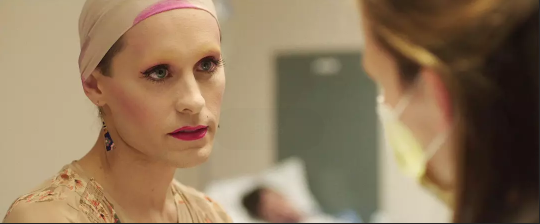

杰瑞德.莱托，美国男演员及歌手。生于1971年12月26日，美国路易斯安那，伯锡尔。家里有一个哥哥
杰瑞德曾经就读于费城艺术大学，后转学至纽约曼哈顿的视觉艺术学校学习电影与音像制作。
21岁时搬到洛杉矶。两年后他同克莱尔·丹尼斯一起出演电视剧《我所谓的生活》登台，之后亮相过《细细的红线》、《搏击俱乐部》以及《美国精神病人》等知名影片，2000年在《梦之安魂曲》中扮演一名瘾君子得到评论界称赞，为他带来了接下来出演大卫芬奇的《战栗空间》、奥利弗斯通的《亚历山大大帝》以及尼古拉斯凯奇的《战争之王》的机会。近几年，在《达拉斯买家俱乐部》中贡献了出色的演出，饰演一位身患艾滋病的同性恋角色，这也是除了梦之安魂曲之外，我最喜欢的他的一部作品
除了演电影外，杰瑞德还是一个很不错的歌手。杰瑞德与山农、以及另外两个朋友组建有一个名叫“30秒钟到火星”的乐队，该乐队于2004年10月发行了首张专辑，并于2005年8月发行了第二张专辑《美丽的谎言》。